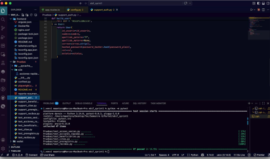
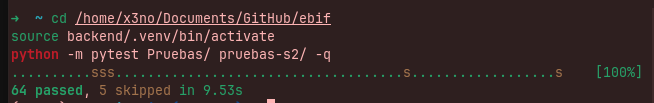

Exportar a PDF: abre este archivo en el navegador, pulsa Ctrl+P (Imprimir), elige Guardar como PDF como destino y ajusta los márgenes si lo necesitas.
Desarrollo e implantación de sistemas de software (Gpo. 107)
Equipo de desarrollo (proyecto EBIF)
Coordinación y seguimiento de la asignatura pueden distribuirse entre los profesores anteriores según el modelo del campus.
Este documento presenta el reporte de las pruebas automatizadas del sistema, orientadas a verificar el comportamiento acordado en las historias de usuario y criterios de aceptación referenciados en el código mediante identificadores SV-*.
Las pruebas se ejecutan con pytest desde el repositorio del proyecto, utilizando una
configuración integrada del código del backend (FastAPI) con módulos de prueba ubicados en
las carpetas Pruebas/ (Sprint 1, criterios SV-*) y pruebas-s2/ (Sprint 2, HU-09 … HU-17).
Gran parte de las validaciones se realizan contra aplicaciones mínimas levantadas en memoria, con repositorios simulados;
Sprint 2 incluye además una prueba opcional de integración con Oracle (EBIF_S2_USE_ORACLE=1).
El alcance incluye autenticación y sesión, beneficiarios, citas, pre-registro, recibos y cobros, acciones rápidas del tablero, almacén, reportes, notificaciones, usuarios, comodatos, saldo pendiente, PDF de citas y comprobaciones sobre código fuente del frontend cuando el criterio se valida mejor de forma estática.
| ID del proyecto | EBIF-GPO107-2026 |
|---|---|
| Referencia del documento | TSR-EBIF-20260515-02 |
| ID de iteración | Iteración documentación y pruebas automatizadas + Sprint 2 |
| Título del sistema en prueba (AUT) | EBIF — Sistema de gestión (backend FastAPI + frontend Angular) |
| Fecha del documento | 21 de mayo de 2026 (Sprint 2, Qase TestOps, evidencias pytest) |
| Núm. de ejemplar | Destinatario |
|---|---|
| 1. | Cuerpo docente del curso (seis profesores, hoja «Cuerpo docente») |
| 2. | Equipo de desarrollo EBIF — alumnos en portada (matrículas A01…) |
| 3. | Repositorio del curso / evidencia de entrega (proyecto ebif) |
| # | Sección / archivo del proyecto |
|---|---|
| 1 | Introducción |
| 2 | Panorama general |
| 3 | Desviaciones |
| 4 | Valoración |
| 5 | Resultados (pytest, Qase TestOps, evidencias) |
| 6 | Evaluación |
| 7 | Resumen de actividades |
| 8 | Enlaces y referencias externas |
Este documento ofrece el resumen de las actividades de prueba correspondientes a la iteración Iteración documentación y pruebas automatizadas del sistema EBIF — Sistema de gestión (backend FastAPI + frontend Angular).
El sistema bajo prueba (AUT), EBIF, da soporte a flujos operativos de beneficiarios, citas,
pre-registro, recibos y cobros, vistas relacionadas con inventario y acceso autenticado. Las pruebas
automatizadas están implementadas con pytest en Pruebas/ y pruebas-s2/, ejercitando rutas
FastAPI mediante repositorios en memoria cuando corresponde. La integración Oracle en Sprint 2 es opcional
(test_oracle_s2.py). La versión documentada corresponde a la rama de desarrollo del curso (actualización mayo 2026).
Sprint 1 — Pruebas/: acceso y sesión (SV-1…6), beneficiarios (SV-7…17), pre-registro (SV-24…30),
citas (SV-31…35, 37), acciones rápidas (SV-38…43), recibos (SV-44…50).
Sprint 2 — pruebas-s2/: HU-09 CURP, HU-10 almacén, HU-11 reportes, HU-12 notificaciones,
HU-13 usuarios, HU-14 comodato, HU-15 saldo pendiente, HU-17 PDF cita, más health check Oracle opcional.
Qase: mismo proyecto que Sprint 1 (FJ26SV); casos S2 en pruebas-s2/qase_manifest.yaml.
El informe se organiza de la siguiente manera:
Documentos citados en este informe resumen de pruebas:
pytest.ini, carpetas Pruebas/ y pruebas-s2/.Pruebas/evidencias/ejecucion-sprint1-pytest.png,
Pruebas/evidencias/ejecucion-sprint1-sprint2-pytest.png.Esta sección ofrece una visión de alto nivel de los hechos y actividades registrados durante la iteración Iteración documentación y pruebas automatizadas sobre EBIF — Sistema de gestión (backend FastAPI + frontend Angular).
También delimita el alcance de las pruebas (qué se probó y qué no) y describe el entorno (hardware, software y datos).
Alcance probado. Sprint 1: API de autenticación, beneficiarios, citas, pre-registro, recibos y contrato Angular del tablero. Sprint 2: almacén, reportes, notificaciones agregadas, usuarios del sistema, comodatos, cobros con saldo pendiente, PDF de cita, validación CURP en DTO y health check con Oracle (opcional).
Alcance no probado o parcial. E2E en navegador (SV-40…42); verificación CURP duplicada por API (HU-09, skip);
regresión funcional completa de Sprint 2 contra Oracle (solo /api/health con EBIF_S2_USE_ORACLE=1);
carga, seguridad ofensiva y cobertura de líneas como umbral de aceptación.
backend/requirements-dev.txt y el proyecto configurado con
pythonpath = backend . en pytest.ini.
Esta sección documenta desviaciones respecto a lo acordado previamente, en especial cuando puedan afectar la aceptación de los resultados, incluyendo referencias a la documentación que explique los motivos.
Pruebas/test_acciones_rapidas.py.
Breve valoración de la exhaustividad del proceso de pruebas frente a los objetivos e restricciones de la actividad. Cuando existan mediciones de cobertura de código, deben incluirse aquí — no se usó cobertura de líneas como umbral de aceptación; se priorizaron pruebas funcionales de API y de contrato.
| Omisiones Sprint 1 | 3 (SV-40, SV-41, SV-42 — E2E/accesibilidad) |
|---|---|
| Omisiones Sprint 2 | 2: CURP duplicado (API pendiente) + test_s2_oracle_health si no defines EBIF_S2_USE_ORACLE=1 |
| Integración Oracle S2 | Ejecutar: EBIF_S2_USE_ORACLE=1 python -m pytest pruebas-s2/test_oracle_s2.py -q |
También se identifican aspectos del AUT que no se probaron con la profundidad prevista (tiempo o recursos).
Pruebas/ y pruebas-s2/ con omisiones documentadas (E2E y API futura).
En la corrida de referencia (mayo 2026): python -m pytest Pruebas/ pruebas-s2/ -q → 64 passed, 5 skipped, 0 failed (~9,7 s).
Con EBIF_S2_USE_ORACLE=1 suele ser 65 passed, 4 skipped. Las pruebas E2E en navegador y umbrales formales
de cobertura de código siguen siendo trabajo opcional posterior.
Resumen de los resultados de la iteración Iteración documentación y pruebas automatizadas sobre EBIF — Sistema de gestión (backend FastAPI + frontend Angular), incidencias resueltas cuando aplica e incidencias pendientes.
python -m pytest Pruebas. Limitación
conocida: omisiones para foco teclado, activación con Enter y contraste en acciones rápidas; no implican fallo del
producto sino ausencia de verificación UI automatizada en esta iteración. Pendiente: incorporar pruebas en navegador
o herramientas tipo axe/Lighthouse si el dueño del producto exige evidencia más allá de la revisión estática.
Datos de corrida de referencia desde la raíz del repositorio (mayo 2026), con
backend/requirements-dev.txt instalado en el entorno virtual.
| Fecha de la ejecución | 21 de mayo de 2026 — corrida local documentada en este informe |
|---|---|
| Comando (suite completa) |
cd /home/x3no/Documents/GitHub/ebif source backend/.venv/bin/activate python -m pytest Pruebas/ pruebas-s2/ -q |
| Resultado documentado | 64 passed, 5 skipped, 0 failed — 69 recolectadas (~9,5–10,5 s) |
| Oracle opcional |
EBIF_S2_USE_ORACLE=1 python -m pytest pruebas-s2/test_oracle_s2.py -q(suele sumar 1 passed y quitar 1 skip del total combinado) |
| Omisiones (5) | S1: SV-40, SV-41, SV-42. S2: CURP duplicado API; test_s2_oracle_health sin EBIF_S2_USE_ORACLE=1. |
| Corrección SV-38 | Fixture dashboard_source lee .ts + .html (navegación en plantilla Angular). |
| Qase TestOps | Proyecto único FJ26SV; publicación con QASE_MODE=testops + token (ver §5.1.2). |
Ejecutar siempre desde la raíz del repo con backend/.venv activado (python -m pytest, no python3 del sistema).
Sprint 1 y Sprint 2 publican en el mismo proyecto Qase
FJ26SV. El plugin qase-pytest crea un
Test Run al ejecutar pytest con QASE_MODE=testops.
| Variables de entorno |
export QASE_MODE=testops export QASE_TESTOPS_API_TOKEN='tu_token' export QASE_TESTOPS_PROJECT=FJ26SV |
|---|---|
| Sync casos Sprint 2 | python scripts/qase_sync_sprint2.pyGenera/actualiza casos en Qase y pruebas-s2/pruebas_s2_qase_ids.json. |
| Publicar resultados | python -m pytest Pruebas/ pruebas-s2/ -vAl terminar: enlace https://app.qase.io/run/FJ26SV/dashboard/… en consola. |
| Sprint 1 → casos Qase | Códigos FJ26SV-1 … FJ26SV-50. Enlace opcional:
export QASE_ID_FJ26SV_N=id_numérico (N del código visible; id de la URL del caso). |
Campo layer |
Qase solo acepta api, e2e, unit, unknown (minúsculas).
Corregido mayo 2026: antes API / Contrato frontend provocaban error HTTP 422 al subir resultados. |
Capturas de pantalla de corridas reales de pytest incluidas en el repositorio bajo
Pruebas/evidencias/ para respaldo de la entrega.

Pruebas/ con
python -m pytest (entorno de referencia del equipo: macOS, Python 3.14, pytest 8.0.3).
Resultado: 47 passed in 14.55s, 0 failed. Módulos visibles:
test_acceso_sesion, test_acciones_rapidas, test_beneficiarios,
test_citas, test_preregistro, test_recibos.

/home/x3no/Documents/GitHub/ebif con venv en backend/.venv y comando
python -m pytest Pruebas/ pruebas-s2/ -q (Linux, Python 3.12.3, pytest 8.4.2).
Resultado: 64 passed, 5 skipped in 9.53s, 0 failed. Los caracteres s en la barra de progreso
corresponden a omisiones documentadas (E2E SV-40…42, CURP duplicado, Oracle sin EBIF_S2_USE_ORACLE=1).
EBIF_S2_USE_ORACLE=1 python -m pytest pruebas-s2/test_oracle_s2.py -v —
test_s2_oracle_health PASSED (evidencia en consola del equipo; no capturada en imagen).
Sección 5 (continuación) — inventario de casos pytest
Leyenda: ✓ passed · ⊘ skipped · ✗ failed. Matriz 5.2 — Sprint 1: 47 ítems. Matriz 5.3 — Sprint 2: 22 ítems. Total: 69.
| SV / ref. | Función de prueba | Archivo | Estado |
|---|---|---|---|
| SV-1 | test_sv1_login_correcto | test_acceso_sesion.py | ✓ |
| SV-2 | test_sv2_login_password_incorrecta | test_acceso_sesion.py | ✓ |
| SV-2 | test_sv2_login_correo_inexistente | test_acceso_sesion.py | ✓ |
| SV-3 | test_sv3_usuario_inactivo | test_acceso_sesion.py | ✓ |
| SV-4 | test_sv4_jwt_expirado_no_accede_me | test_acceso_sesion.py | ✓ |
| SV-4 | test_sv4_jwt_manipulado_no_accede_me | test_acceso_sesion.py | ✓ |
| SV-5 | test_sv5_sin_token_no_accede_ruta_protegida | test_acceso_sesion.py | ✓ |
| SV-6 | test_sv6_mensajes_iguales_sin_enumeracion | test_acceso_sesion.py | ✓ |
| SV-38 | test_sv38_cada_accion_rapida_navega_a_la_pantalla_correcta | test_acciones_rapidas.py | ✓ |
| SV-39 | test_sv39_flujo_directo_nuevo_recibo_query_params | test_acciones_rapidas.py | ✓ |
| SV-40 | test_sv40_teclado_foco_visible | test_acciones_rapidas.py | ⊘ |
| SV-41 | test_sv41_activacion_enter | test_acciones_rapidas.py | ⊘ |
| SV-42 | test_sv42_contraste_legibilidad | test_acciones_rapidas.py | ⊘ |
| SV-43 | test_sv43_rutas_destino_protegidas_por_auth_guard | test_acciones_rapidas.py | ✓ |
| SV-7 | test_sv7_listar_sin_filtros | test_beneficiarios.py | ✓ |
| SV-8 | test_sv8_filtrar_por_criterios | test_beneficiarios.py | ✓ |
| SV-9 | test_sv9_alta_datos_minimos | test_beneficiarios.py | ✓ |
| SV-10 | test_sv10_alta_datos_completos | test_beneficiarios.py | ✓ |
| SV-11 | test_sv11_edicion_y_persistencia | test_beneficiarios.py | ✓ |
| SV-12 | test_sv12_validacion_campos_obligatorios_vacios | test_beneficiarios.py | ✓ |
| SV-13 | test_sv13_validacion_formatos_invalidos | test_beneficiarios.py | ✓ |
| SV-14 | test_sv14_detalle_por_folio | test_beneficiarios.py | ✓ |
| SV-15 | test_sv15_historial_beneficiario | test_beneficiarios.py | ✓ |
| SV-16 | test_sv16_eliminacion_baja_logica | test_beneficiarios.py | ✓ |
| SV-17 | test_sv17_estadisticas_coherentes | test_beneficiarios.py | ✓ |
| SV-37 | test_sv37_citas_hoy_vacias_sin_error | test_citas.py | ✓ |
| SV-31 | test_sv31_visualizar_citas_del_dia | test_citas.py | ✓ |
| SV-32 | test_sv32_crear_cita_dia_actual_datos_validos | test_citas.py | ✓ |
| SV-33 | test_sv33_completar_cita_estado_actualizado | test_citas.py | ✓ |
| SV-34 | test_sv34_cancelar_cita_motivo_o_estado | test_citas.py | ✓ |
| SV-35 | test_sv35_filtros_listado_citas | test_citas.py | ✓ |
| SV-24 | test_sv24_preregistro_publico_flujo_feliz_sin_login | test_preregistro.py | ✓ |
| SV-25 | test_sv25_avance_pasos_indicador_paso_actual_coherente | test_preregistro.py | ✓ |
| SV-26 | test_sv26_no_avanzar_paso_con_datos_incompletos | test_preregistro.py | ✓ |
| SV-27 | test_sv27_respuesta_confirmacion_tras_envio_exitoso | test_preregistro.py | ✓ |
| SV-28 | test_sv28_catalogos_publicos_accesibles_tras_flujo | test_preregistro.py | ✓ |
| SV-29 | test_sv29_listar_solicitudes_panel_interno | test_preregistro.py | ✓ |
| SV-30 | test_sv30_aprobar_rechazar_reflejo_estado | test_preregistro.py | ✓ |
| SV-44 | test_sv44_listar_recibos | test_recibos.py | ✓ |
| SV-45 | test_sv45_filtrar_folio_beneficiario_fechas | test_recibos.py | ✓ |
| SV-46 | test_sv46_nuevo_cobro_un_metodo_total_y_saldo | test_recibos.py | ✓ |
| SV-47 | test_sv47_nuevo_cobro_varios_metodos_pago | test_recibos.py | ✓ |
| SV-48 | test_sv48_caso_exento_pago | test_recibos.py | ✓ |
| SV-49 | test_sv49_cancelar_recibo_motivo_y_listado | test_recibos.py | ✓ |
| SV-50 | test_sv50_validacion_api_sin_beneficiario_sin_monto_sin_metodos | test_recibos.py | ✓ |
| SV-50 | test_sv50_ui_guardarCobro_validaciones_en_fuente | test_recibos.py | ✓ |
| — | test_stats_y_metodos_pago_disponibles | test_recibos.py | ✓ |
pruebas-s2/ (HU-09 … HU-17)Proyecto Qase FJ26SV. hu_s2_oracle_health requiere EBIF_S2_USE_ORACLE=1.
| HU / ref. | Función de prueba | Archivo | Estado |
|---|---|---|---|
| HU-09 | test_hu09_curp_formato_oficial_valido | test_hu09_curp.py | ✓ |
| HU-09 | test_hu09_curp_formato_invalido_rechazado | test_hu09_curp.py | ✓ |
| HU-09 | test_hu09_verificacion_curp_duplicado_endpoint_pendiente | test_hu09_curp.py | ⊘ |
| HU-10 | test_hu10_listar_productos | test_hu10_almacen.py | ✓ |
| HU-10 | test_hu10_stats | test_hu10_almacen.py | ✓ |
| HU-10 | test_hu10_crear_producto_encargado | test_hu10_almacen.py | ✓ |
| HU-10 | test_hu10_listar_servicios | test_hu10_almacen.py | ✓ |
| HU-11 | test_hu11_reporte_resumen | test_hu11_reportes.py | ✓ |
| HU-11 | test_hu11_exportar_reporte_pdf | test_hu11_reportes.py | ✓ |
| HU-12 | test_hu12_notificaciones_lista | test_hu12_notificaciones.py | ✓ |
| HU-12 | test_hu12_notificaciones_con_alertas | test_hu12_notificaciones.py | ✓ |
| HU-13 | test_hu13_listar_usuarios | test_hu13_usuarios.py | ✓ |
| HU-13 | test_hu13_crear_usuario | test_hu13_usuarios.py | ✓ |
| HU-13 | test_hu13_config_publica | test_hu13_usuarios.py | ✓ |
| HU-14 | test_hu14_listar_comodatos | test_hu14_comodato.py | ✓ |
| HU-14 | test_hu14_crear_comodato | test_hu14_comodato.py | ✓ |
| HU-14 | test_hu14_contrato_comodato_pdf | test_hu14_comodato.py | ✓ |
| HU-15 | test_hu15_cobro_parcial_saldo_pendiente | test_hu15_saldo_pendiente.py | ✓ |
| HU-15 | test_hu15_cobro_completo_saldo_cero | test_hu15_saldo_pendiente.py | ✓ |
| HU-17 | test_hu17_comprobante_cita_pdf | test_hu17_pdf_cita.py | ✓ |
| HU-17 | test_hu17_comprobante_cita_inexistente | test_hu17_pdf_cita.py | ✓ |
| Oracle S2 | test_s2_oracle_health | test_oracle_s2.py | ✓* |
* Con variables Oracle y wallet configurados.
Evaluación global del proceso de pruebas, problemas y limitaciones.
Resumen de las actividades y eventos principales de la iteración Iteración documentación y pruebas automatizadas sobre EBIF, e información indicativa de recursos (personal y esfuerzo en persona-día).
Personal de referencia: seis profesores del cuerpo docente (hoja «Cuerpo docente») y cinco integrantes del equipo de desarrollo en la portada del informe.
Inicio de pruebas (referencia): abril de 2026 Fin de pruebas (referencia): 16 de abril de 2026
| Concepto | Planificado | Real |
|---|---|---|
| Integrantes equipo de desarrollo (alumnos) | 5 | 5 |
| Esfuerzo de diseño de pruebas (persona-día, indicativo) | 1,5 | 2,0 |
| Esfuerzo de ejecución de pruebas (persona-día, indicativo) | 2,0 | 2,0 |
| Esfuerzo de re-prueba tras correcciones (persona-día, indicativo) | 0,5 | 0,5 |
| Gestión del proceso e informe (persona-día, indicativo) | 0,5 | 0,75 |
Las cifras de esfuerzo son ilustrativas para el reporte académico; ajústalas al timesheet real del equipo si aplica.
Gestión de pruebas en Qase (proyecto FJ26SV, Sprint 1 y Sprint 2) y referencia de pytest.
python -m pytest con QASE_MODE=testops publica un run nuevo)